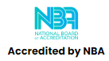
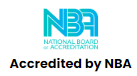

About KL University
The KL College of Engineering was started in the academic year 1980-81 and achieved autonomous status in
2006. Koneru Lakshmaiah Education Foundation was conferred with Deemed to be University status in the year
2009, under Section 3 of the UGC Act 1956. The University underwent assessment by NAAC and was accredited
for a period of five years from 2018 to 2023, with A++ grade and CGPA of 3.57 out of 4.0 scale. The
University has been accredited with Category-1 status. KLEF has established an ecosystem to promote
innovation, including a centre for Innovation, Incubation and Entrepreneurship Cell (IIEC), leading to
start-ups in different disciplines. Through publishing research articles in various national and
international refereed journals, particularly in Scopus/WoS/SCI Indexed journals, research has taken a
quantum leap towards improving its quality, resulting in good h-index.
About Department of CSIT
The Department of COMPUTER SCIENCE & INFORMATION TECHNOLOGY (CSIT) is started in the year 2020 which
offers
Undergraduate program (B.Tech.), and Ph.D. (Doctor of Philosophy) with well experienced faculty who
contribute
immensely for the all-round development of students of the Department.
This four-year undergraduate program is a blend of engineering and tool-based skill-driven learning. While
giving significance to prototype building, this program also masters in making students immediately recruit
able
and billable by the industry. Every course in every specialization is attached with plethora of tools that
are
significant in the industry today and in the future. This program explores the opportunities that the IT
sector
is bringing in globally. From managerial aspects in IT to the hands-on tools in web development, this
program is
the right choice for students who aspire the IT sector and have that zeal to be a tool proficient.
Globally, Information Technology (IT) skills continue to be in high demand from businesses in many sectors
and
this field experiencing explosive growth. This Computer Science and Information Technology degree is
designed to
meet the needs of these businesses, to pursue a rewarding career. The curriculum was design to meet the
emerging
technologies of IT sector. The course combines theoretical knowledge with practical experiments to prepare
for
the world of work.
About ICETCAI-2024
The scope of the International conference on emerging trends in Cybersecurity and
artificial intelligence with Internet of Things (ICETCAI-2024) is broad and encompasses a wide
range of topics and research areas within the field
of
computer science and information technology. The conference aims to provide a platform for researchers,
practitioners, academicians, and industry professionals to exchange ideas, present their latest research
findings, and discuss advancements and innovations in the field. The conference includes invited speakers
from various reputed institutes as well as sessions for paper presentations.
This conference invites novel research contributions that address all aspects related to Computer Science
and Information Technology.
 
